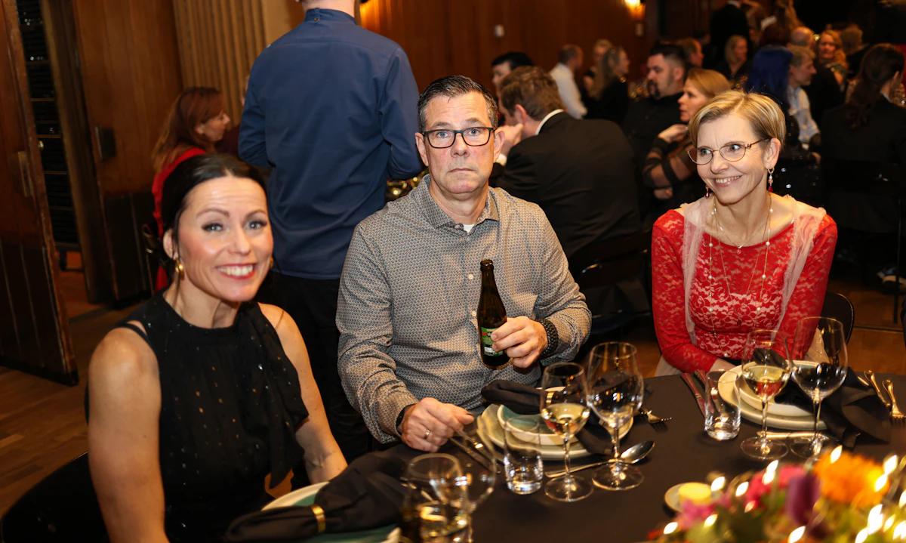

Persiapan Sesi / artikel konsep
Sebelum Foto Keluarga: Sisakan Ruang untuk Jeda
Persiapan pakaian dan lokasi memang membantu. Jadwal yang manusiawi serta daftar kelompok yang jelas sama pentingnya.

Foto bersama sering bertepatan dengan hari yang sudah sibuk: ada yang baru tiba, ada makanan yang perlu disiapkan, dan ada anggota keluarga yang cepat lelah. Rencana yang baik memberi ruang untuk kondisi itu, bukan menuntut semua orang siap pada detik yang sama.
Buat daftar yang pendek dan berurutan
Tulis kelompok foto yang benar-benar diperlukan. Mulai dari kelompok besar saat semua orang hadir, lalu kelompok yang lebih kecil. Jika ada peserta yang perlu duduk atau tidak bisa berdiri lama, dahulukan kebutuhannya. Hindari memanggil orang bolak-balik tanpa urutan.
Pilih satu orang penghubung yang mengenal peserta. Ia membantu menyebut nama dan mengumpulkan kelompok, sementara fotografer menjaga komposisi. Bagikan daftar sebelum hari sesi agar perubahan bisa dibicarakan dengan tenang.
Pilih pakaian yang nyaman dipakai bersama
Tidak semua orang harus memakai warna yang persis sama. Coba letakkan beberapa pilihan pakaian berdekatan dan lihat apakah ada motif yang terlalu dominan. Pastikan peserta tetap nyaman duduk, bergerak, dan mengangkat tangan dengan pakaian tersebut.
Untuk anak, utamakan rutinitas makan dan istirahat. Siapkan jeda serta benda yang membuatnya merasa aman. Hindari menjadikan sesi sebagai ujian untuk tersenyum; foto saat berinteraksi dapat menjadi pilihan yang sama berarti.
Periksa lokasi dan batas penggunaan
Tanyakan akses tangga, kursi, toilet, tempat berteduh, dan rencana jika hujan. Jika memakai ruang umum atau tempat usaha, pastikan izin pemotretan sudah jelas. Foto uji lokasi membantu melihat apakah semua orang bisa masuk bingkai tanpa berdesakan.
Sepakati siapa yang menerima hasil dan apakah ada foto yang tidak boleh dibagikan secara publik. Untuk anak, libatkan orang tua atau wali dalam persetujuan yang sesuai. Jangan menganggap foto keluarga boleh dipakai sebagai promosi hanya karena sesinya selesai.
Coba sendiri
Buat satu lembar rencana: urutan tiga kelompok, waktu berkumpul, kebutuhan akses, penghubung, dan rencana cadangan. Sisakan jeda di antara kelompok; tidak perlu memenuhi setiap menit dengan foto.
- Gunakan alat yang tersedia dan minta izin sebelum memotret orang.
- Simpan satu catatan untuk dibandingkan pada latihan berikutnya.